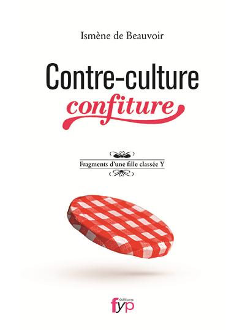

Afin que la femme soit considérée égale à l’homme, ces grandes figures ont bouleversé
les cultures et les façons de penser. Découvrez les combats du féminisme
à travers des articles et des récits sous différents formats.
Commencer !
Écoféminisme : le mouvement féministe écologique
Le féminisme écologique (ou écoféminisme)
est un courant philosophique des années 70 de plus en plus populaire.
Découvrez son histoire.
Pornographie et féminisme : le combat d’Andrea Dworkin
Dans le but de mettre fin à la pornographie et à l'humiliation des femmes,
Andrea Dworkin s'est battue durant l'entièreté de sa vie. Voici sa biographie.
“Contre-culture confiture” : les chroniques d’Agathe Parmentier

Agathe Parmentier (Ismène de Beauvoir) publie en 2013 un recueil de chroniques
qu'elle nomme "Contre-culture confiture". Découvrez-le ici.
Frise
Découvrez une frise interactive traitant de l’écoféminisme.
Galerie
Découvrez des figures françaises et internationales du féminisme.